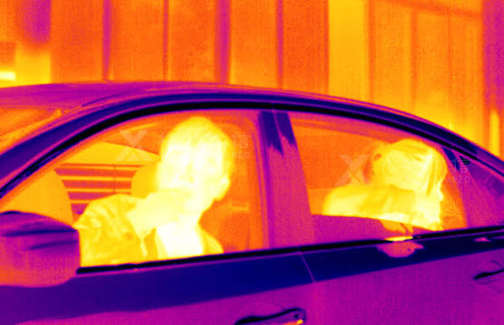
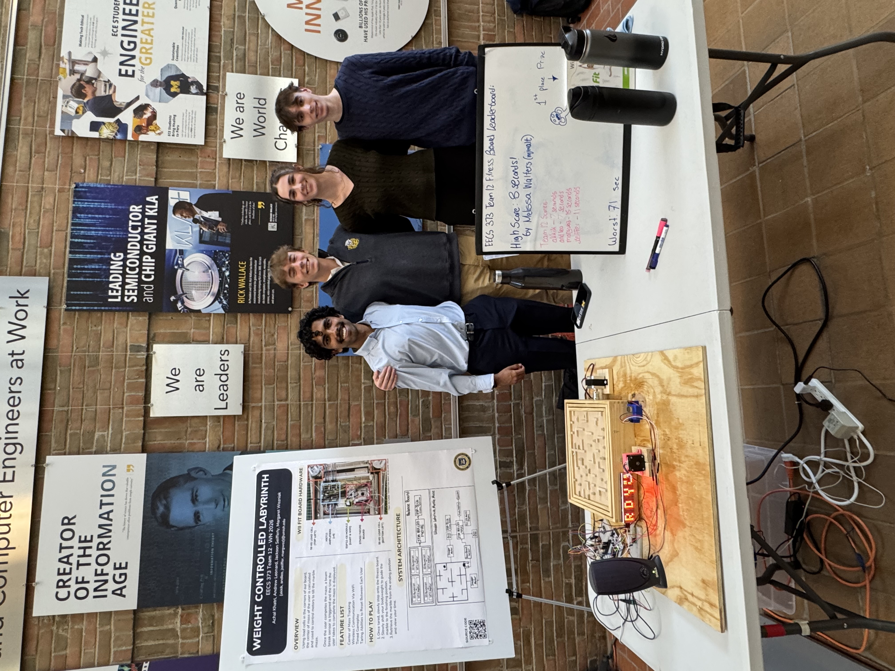
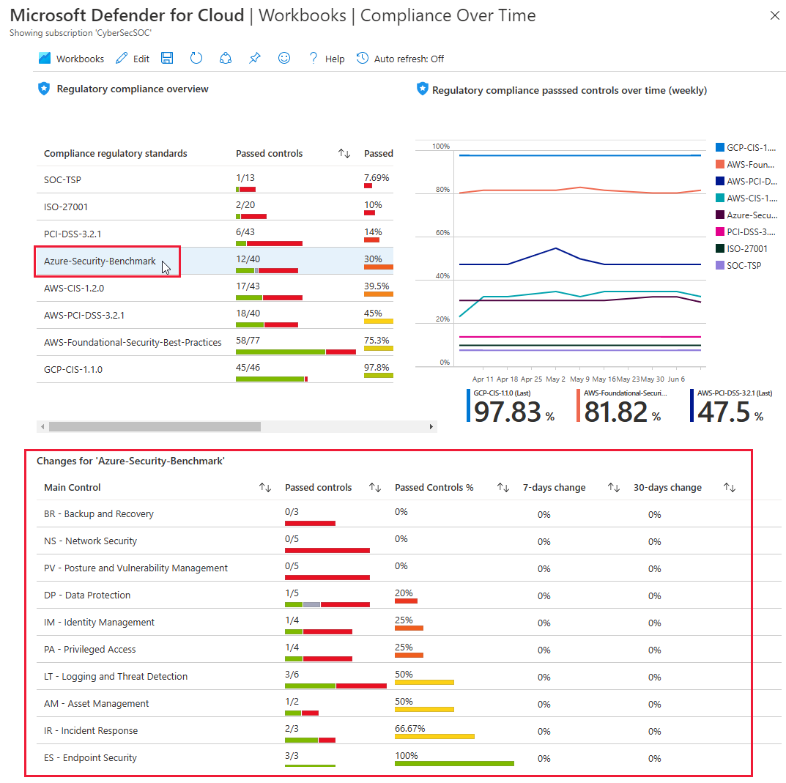

Beyond Visual Spectrum Sensing
Exploring alternative sensing modalities for autonomous robotics, including thermal perception and methods for detecting and interpreting the world beyond standard RGB vision.
Explore projectEngineering · Robotics · Embedded Systems
I am a senior Computer Science Engineering & Data Science student at the University of Michigan, with a concentration in autonomous and embedded systems.
I've previously interned with Consumers Energy and Beach Internals, working on database administration and AI integration softwares. Currently, I'm conducting research on beyond visual spectrum sensing for autonomous robotics and will be pursuing a Masters in Computer Engineering with a Robotics concentration starting January 2027.
In my spare time, you can find me cooking, reading, or playing field hockey!

Selected work
A mix of robotics, applied machine learning, embedded systems, and software tools.

Exploring alternative sensing modalities for autonomous robotics, including thermal perception and methods for detecting and interpreting the world beyond standard RGB vision.
Explore project
A custom fitness-board maze that uses load cells to calculate a player's center of mass and control motors that tilt the board.
Explore project
A forecasting tool to estimate dining-hall meal servings from meal, location, day, and time features to help reduce leftovers.
Explore project
Monitoring and alerting workflows using Kusto Query Language (KQL) and Azure Log Analytics to identify unusual database resource usage.
Explore projectExperience & education
University of Michigan · Robotics research
Investigating alternative sensing approaches, including thermal vision, for robotic perception and educational robotics applications.
Experience across database administration, monitoring, and AI integration software.
Computer Science and Engineering, Data Science
Focus areas included autonomous and embedded systems, with project work spanning microcontrollers, sensing, robotics, and machine learning.